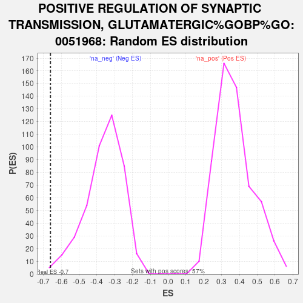

| | | Dataset | ag_ranks |
| Phenotype | NoPhenotypeAvailable |
| Upregulated in class | na_neg |
| GeneSet | POSITIVE REGULATION OF SYNAPTIC TRANSMISSION, GLUTAMATERGIC%GOBP%GO:0051968 |
| Enrichment Score (ES) | -0.6606548 |
| Normalized Enrichment Score (NES) | -1.8435253 |
| Nominal p-value | 0.0023255814 |
| FDR q-value | 0.12114985 |
| FWER p-Value | 0.952 |
Table: GSEA Results Summary
 Fig 1: Enrichment plot: POSITIVE REGULATION OF SYNAPTIC TRANSMISSION, GLUTAMATERGIC%GOBP%GO:0051968
Fig 1: Enrichment plot: POSITIVE REGULATION OF SYNAPTIC TRANSMISSION, GLUTAMATERGIC%GOBP%GO:0051968
Profile of the Running ES Score & Positions of GeneSet Members on the Rank Ordered List

Fig 2: POSITIVE REGULATION OF SYNAPTIC TRANSMISSION, GLUTAMATERGIC%GOBP%GO:0051968: Random ES distribution
Gene set null distribution of ES for POSITIVE REGULATION OF SYNAPTIC TRANSMISSION, GLUTAMATERGIC%GOBP%GO:0051968